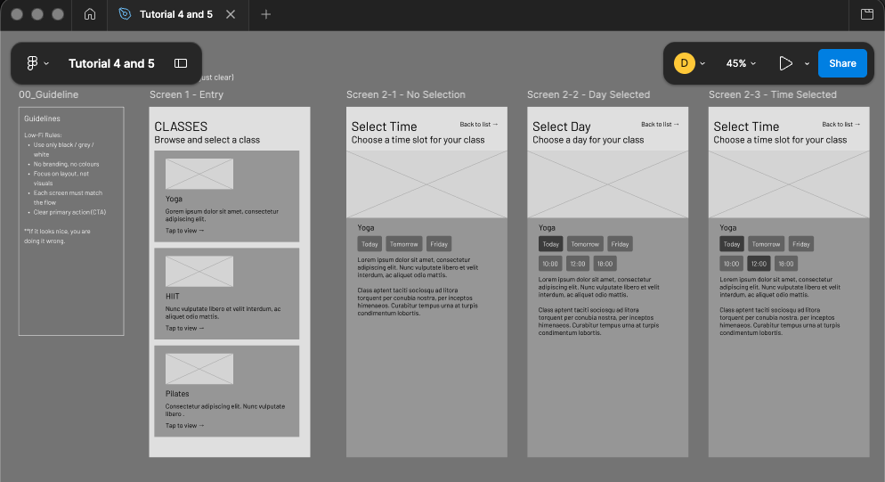
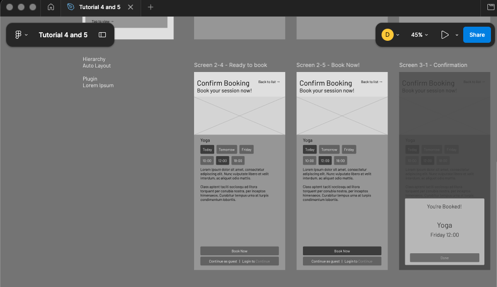

This teaching sequence guides students from a UX flow into usable low-fidelity screens, interaction states, a
simple clickable prototype, and a peer usability check.
Session Length
Approx. 4 hours
Main Tool
Figma reference file
Teaching Method
Show → Attempt → Reveal → Refine → Connect → Test
Purpose of the Session
Students should understand that screen design is not only about visual layout. A usable interface must
translate a flow into clear screens, show what users can do, respond to user decisions, and provide
feedback.
Full Teaching Sequence
Phase 1
10–15 mins
Setup & Framing
Objective: Set expectations and focus students on clarity, not visual polish.
Instructor does
Introduce the session: moving from UX flow to actual screens.
Show the UX Flow and Flow-to-Screen Mapping pages.
Explain Entry, Action, and Outcome screens.
We are not designing pretty UI today. We are designing usable interaction.
Screenshot 1 — UX Flow + Screen Mapping
This shows how the UX flow is translated into Entry, Action, and Outcome screens.
What to look for: the flow should not be treated as decoration. It is the source that determines what
screens need to be designed.
Phase 2
15–20 mins
Guided Demo: Screen 1 Only
Objective: Introduce basic Figma setup through the Entry screen.
Instructor demonstrates
Create a mobile frame.
Add title, subtitle, and card structure.
Apply basic spacing and grouping.
Show how the card functions as an interaction point.
Teaching points
Hierarchy: title → content → action.
Grouping: related information should sit together.
Scan behaviour: users scan before they read.
Do not show the full solution yet. Students should not simply copy the file.
Phase 3
30–40 mins
Student Build: First Attempt
Objective: Let students attempt their own screen translation independently.
Students create
Screen 1 — Entry
Screen 2 — Action
Screen 3 — Outcome
Instructor observes
Is the main action clear?
Is the layout too cluttered?
Is there a visible hierarchy?
Does the screen match the UX flow?
Allow controlled struggle. Do not correct everything immediately.
Phase 4
20–25 mins
Intervention: States & Interaction
Objective: Show that interfaces are not static. They change based on user action.
Instructor shows
Use the reference Figma file to show the Action screen evolving through interaction states:
No Selection → Day Selected → Time Selected → Ready to Book → Confirmation
Key teaching points
State: selected vs not selected.
Progressive disclosure: show actions when they become relevant.
CTA clarity: the user should know when they can act.
Questions to ask
What changed between each screen?
When can the user act?
How does the system show feedback?
Screenshot 2 — Low-Fi Screens + Interaction States
The sequence illustrates how the Action screen changes as users make decisions, progressing from no
selection to booking and confirmation.


What to look for: Screen 2 is not multiple unrelated pages. It is one action screen changing based on user
decisions.
Phase 5
30–40 mins
Student Refinement
Objective: Students improve their first attempt using interaction and hierarchy
principles.
Students update
Add or clarify selection states.
Improve visual hierarchy.
Clarify the primary CTA.
Ensure the screen matches the flow.
Instructor guides
Ask students where the user should tap first.
Check whether the action appears at the correct moment.
Encourage simpler layouts over decorative visuals.